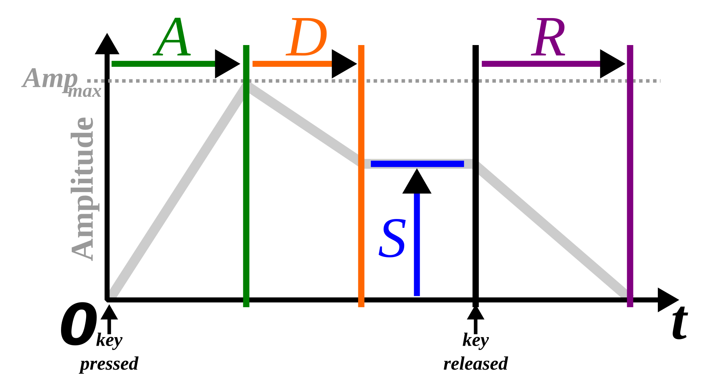

Strudel Shortcuts
Play: Ctrl-ENTER
Stop: Ctrl-.
Sounds
ADSR envelope: Combination of Attack, Decay, Sustain, and Release.
time (number|Pattern): attack time in seconds
time (number|Pattern): decay time in seconds
gain (number|Pattern): sustain level (0 to 1)
time (number|Pattern): release time in seconds
// attack, decay, sustain, release
note("[e3 ~ f3 ~ f4]").sound("sine").attack(0).decay(1).sustain(.5).release(1)
.scope()
